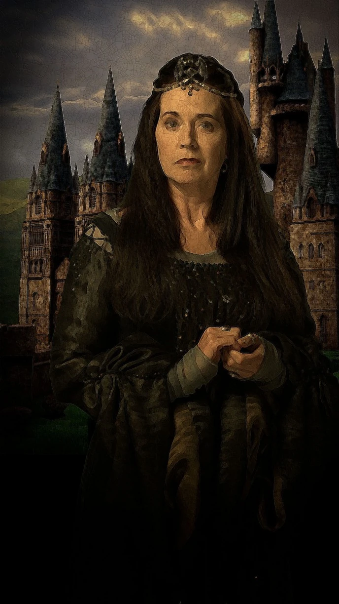

Hogwarts fue fundada hace más de mil años por cuatro destacados magos: Godric Gryffindor, Helga Hufflepuff, Rowena Ravenclaw y Salazar Slytherin. Juntos, crearon la escuela de magia más prestigiosa del mundo en un castillo en las Tierras Altas de Escocia. Cada uno de los fundadores valoraba diferentes cualidades y estableció una casa en Hogwarts para estudiantes con esas características: Gryffindor para el coraje, Hufflepuff para la lealtad, Ravenclaw para la sabiduría y Slytherin para la astucia. A lo largo de los siglos, Hogwarts ha sido testigo de eventos históricos y ha resistido tiempos difíciles, manteniendo su compromiso con la educación y la formación de jóvenes magos y brujas. Hoy en día, sigue siendo un símbolo de esperanza y magia en el mundo mágico.
Rowena Ravenclaw
Rowena Ravenclaw fue una bruja destacada y una de las fundadoras de Hogwarts. Era conocida por su inteligencia y sabiduría excepcionales. Fundó la Casa Ravenclaw en Hogwarts, donde se valoran la creatividad, la curiosidad y la búsqueda del conocimiento. Rowena Ravenclaw también es famosa por haber creado el diadema de Rowena Ravenclaw, un objeto mágico poderoso que se cree que otorga sabiduría a quien lo posee. Su legado perdura en la historia de la magia como uno de los pilares de la educación mágica en Hogwarts.
Salazar Slytherin

Salazar Slytherin fue uno de los cuatro fundadores de Hogwarts y un poderoso mago conocido por su astucia y ambición. Fundó la Casa Slytherin en la escuela, donde se valoran la determinación, el ingenio y la astucia. Slytherin creía en la pureza de la sangre mágica y mostraba desconfianza hacia los nacidos de padres no mágicos, lo que eventualmente llevó a su disputa con los otros fundadores y su partida de la escuela. Es famoso por haber creado la Cámara de los Secretos, una cámara oculta en Hogwarts que albergaba una serpiente gigante, el basilisco, y que solo se abriría cuando su heredero legítimo llegara a la escuela. El legado de Salazar Slytherin perdura en la Casa Slytherin y en la historia de Hogwarts, siendo recordado como un mago de gran habilidad y determinación.
Godric Gryffindor

Godric Gryffindor fue uno de los cuatro fundadores de Hogwarts y un mago de renombre en la comunidad mágica. Él valoraba el coraje, la valentía y la determinación por encima de todo. Fundó la Casa Gryffindor en Hogwarts, donde se acoge a los estudiantes que muestran esas cualidades. Gryffindor es recordado por su habilidad en el duelo y su espíritu indomable. Su legado perdura en la historia de Hogwarts y en la Casa Gryffindor, donde sus valores continúan inspirando a las generaciones venideras de magos y brujas.
Helga Hufflepuff

Helga Hufflepuff fue una bruja respetada y una de las fundadoras de Hogwarts. Se la recuerda por su generosidad, lealtad y habilidad para acoger a todos los estudiantes, sin importar su origen o habilidades mágicas. Fundó la Casa Hufflepuff en Hogwarts, donde se valoran la amistad, el trabajo duro y la igualdad. Hufflepuff es conocida por su habilidad en la cocina mágica y su compromiso con la justicia. Su legado perdura en la historia de Hogwarts como un símbolo de bondad y solidaridad, y la Casa Hufflepuff sigue siendo un hogar para aquellos que valoran la amistad y la inclusión.